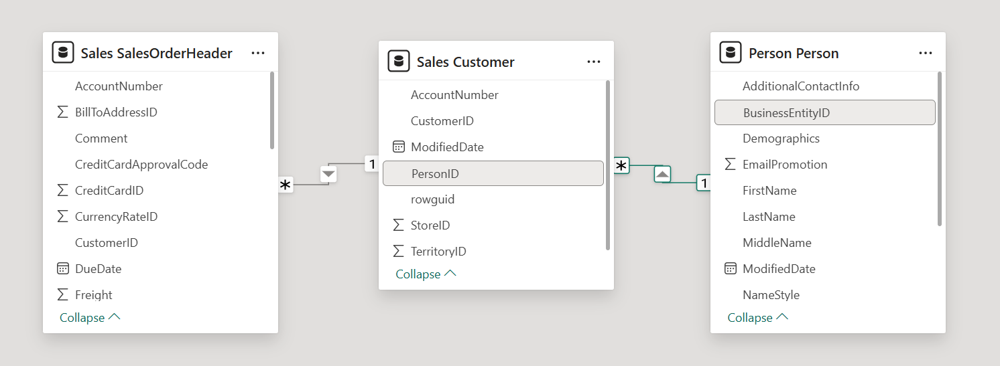
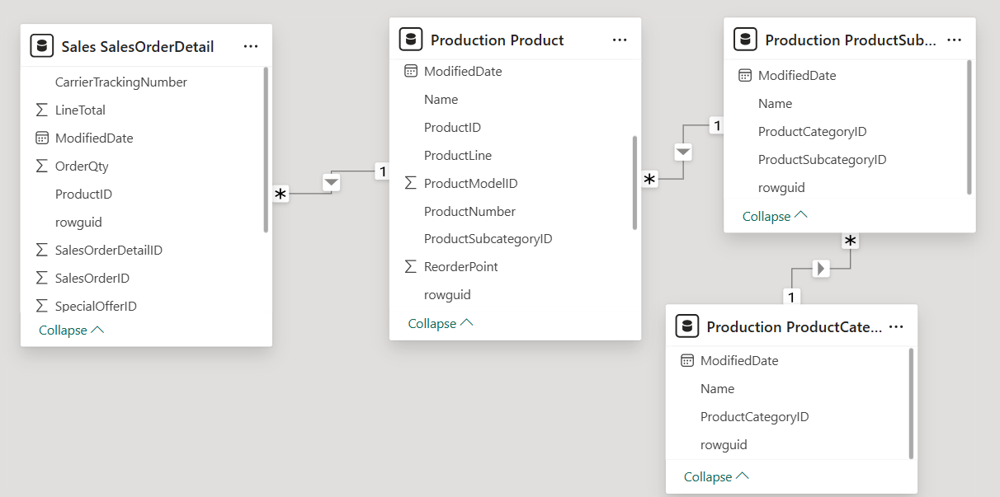
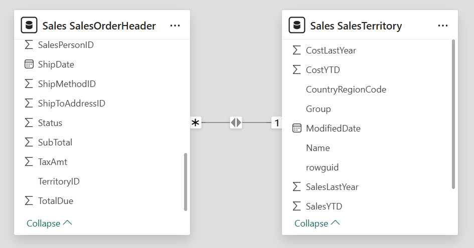
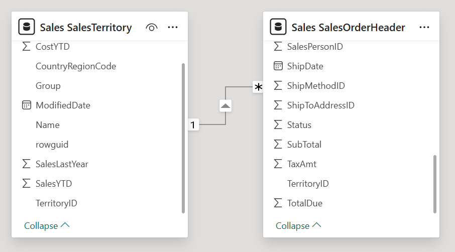
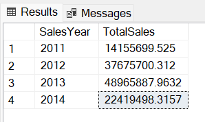
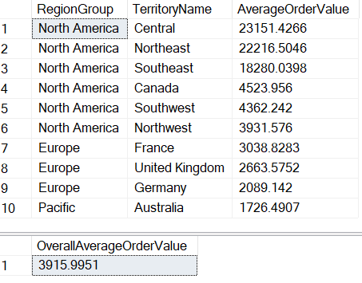

01 · Project Overview
How can a business turn interconnected sales, customer, product, and territory records into a clearer picture of performance, as well as identify where to focus its next decisions?
In this academic business intelligence project, our team analyzed the AdventureWorks2017 sample database. I used SQL to retrieve, join, and aggregate data from related tables, then developed Power BI visualizations to explore six questions covering revenue growth, customer concentration, product mix, geographic performance, sales representatives, and average order value.
02 · The Business Challenge
Sales performance cannot be understood from a single total. A growing business also needs to know who buys, what sells, where revenue originates, which representatives drive results, and how order values vary. These dimensions are stored in different tables, so meaningful reporting requires connecting records through consistent keys and defining metrics at the correct level of detail.
Guiding question: How can relational sales data be transformed into reliable, decision-ready views of business performance?
03 · Dataset & Analytical Assumptions
The project used the AdventureWorks2017 SQL Server database, including tables from the Sales, Production, Person, and HumanResources schemas. Important relationships included sales orders to customers, order lines to products, products to subcategories and categories, and orders to territories or sales representatives.
Before interpreting the results, I treated the source as sufficiently clean, complete, and accurate for exploratory analysis. For a production deployment, I would explicitly validate missing foreign keys, duplicate identifiers, unexpected join multiplication, reporting-period coverage, and consistency between order-header and line-item measures.
SalesOrderHeader.TotalDue, while product-category sales use SalesOrderDetail.LineTotal. Because these fields measure different amounts, their totals should not be compared as though they are identical revenue definitions.04 · My Role & Technical Approach
My contribution combined relational querying with dashboard design. Rather than beginning with charts, I started with the business question and traced the tables and fields needed to answer it.
- Define the questions: Translate sales-performance objectives into six measurable analytical areas.
- Inspect table relationships: Identify join keys and one-to-many relationships across sales, customers, products, people, and territories.
- Write SQL queries: Use
INNER JOIN,GROUP BY,SUM(),AVG(), date extraction, andTOP 10to produce reporting-ready results. - Build Power BI visuals: Match the chart type to the question—line chart for time, horizontal bars for rankings, maps for geography, and a KPI card for average order value.
- Interpret findings: Explain the business implications and distinguish observed patterns from untested explanations.
SQL source: View my complete SQL script.
05 · Analysis & Findings
Sales Trends Over Time
Business question: How did total sales change year over year?
SQL approach: Group orders by YEAR(OrderDate) and calculate SUM(TotalDue).
Finding: The query returned approximately $14.16M in 2011, $37.68M in 2012, $48.97M in 2013, and $22.42M in 2014. Sales rose sharply through 2013, then appeared lower in 2014.
Interpretation: The 2014 result should be checked for partial-year coverage before concluding that annual performance deteriorated. A stronger comparison would use equivalent year-to-date periods or monthly sales.
Top 10 Customers by Revenue
Business question: Which customers contributed the most sales?
SQL approach: Join SalesOrderHeader, Customer, and Person to connect order values with customer names; aggregate totals and rank the top ten.
Finding: Roger Harui ($989,401), Andrew Dixon ($961,676), and Reuben D'sa ($954,022) led the returned customer ranking.
Recommendation: Explore repeat purchase behavior and customer profitability before designing targeted loyalty initiatives for high-revenue accounts.
Product Category Sales Performance
Business question: Which categories contribute the most product sales?
SQL approach: Join order details to products, product subcategories, and categories; group by category and sum LineTotal.
Finding: Bikes ($94.65M) dominated the category totals, compared with Components ($11.80M), Clothing ($2.12M), and Accessories ($1.27M).
Recommendation: Examine bike-category margins and the potential for complementary accessory sales; revenue alone does not determine profitability.
Sales by Territory & Region
Business question: Where are sales concentrated geographically?
SQL approach: Join SalesOrderHeader to SalesTerritory using TerritoryID, then aggregate TotalDue by territory, country code, and region group.
Finding: The mapped sales activity shows a strong presence in North America alongside activity in Europe and Australia. Map bubble sizes indicate geographic differences but do not, by themselves, explain their causes.
Next step: Compare sales with market size, margins, and customer counts before recommending geographic expansion.
Top Sales Representatives by Revenue
Business question: Which sales representatives generated the highest order totals?
SQL approach: Connect sales orders to salesperson, employee, and person records; aggregate TotalDue by representative.
Finding: Linda Mitchell ($11.70M) and Jillian Carson ($11.34M) led the chart, followed by Michael Blythe ($10.48M).
Interpretation: Representative totals are useful for identifying patterns, but fair performance comparisons should account for assigned territories, tenure, account portfolios, and sales opportunities.
Average Order Value by Region
Business question: What is the typical order value, and how does it vary by territory?
SQL approach: Calculate AVG(TotalDue) overall and by joined sales territory.
Finding: Overall average order value was approximately $3,915.99. The Central ($23.15K), Northeast ($22.22K), and Southeast ($18.28K) territories had much higher averages than most other territories.
Next step: Examine order counts and the distribution of order sizes to determine whether a small number of unusually large orders is driving these averages.
06 · Power BI Visual Highlights
These visuals translate the six SQL analyses into a more accessible reporting experience. Use the arrows to browse the dashboard highlights.
07 · Behind the Analysis: SQL & Data Relationships
These selected screenshots show the data model and SQL results underlying the Power BI visuals. They illustrate how I connected tables and checked query outputs before presenting findings.






For the full query logic (including customer rankings, product-category joins, territory aggregations, and salesperson analysis) please see the SQL script.
08 · Business Recommendations
- Customer strategy: Explore loyalty and account-management opportunities among high-revenue customers, while evaluating margins and repeat purchasing.
- Product strategy: Monitor the strong concentration in Bikes and investigate cross-category opportunities with Components and Accessories.
- Regional strategy: Compare territory sales and average order values with customer counts, market potential, and operating costs.
- Sales operations: Investigate practices used by high-performing representatives while accounting for differences in territory assignments.
- Reporting: Standardize metric definitions and introduce comparable reporting periods for more reliable trend analysis.
09 · Limitations & Next Steps
This was an exploratory analysis of a sample database, not a live business deployment. The charts reveal descriptive patterns; they do not establish causality or prove that a recommendation will increase revenue.
- Validate time coverage: Confirm whether 2014 includes a complete year before comparing annual totals.
- Reconcile metrics: Document the difference between
TotalDueandLineTotaland use consistent measures when comparing analyses. - Test data relationships: Check join cardinality, missing records, and order-versus-line-item grain.
- Deepen customer analysis: Add repeat-purchase rates, customer lifetime value, and margin measures.
- Improve decision support: Add drill-through dashboards, date filters, and regular refreshes to make the reporting more useful over time.
10 · Reflection
This project helped me see SQL and Power BI as two parts of the same analytical process. SQL made it possible to turn a relational database into clearly defined measures, while Power BI challenged me to choose visuals that communicated each result effectively.
More importantly, I learned that a convincing chart is only as reliable as the relationships and assumptions behind it. Understanding the underlying data, checking how a metric is calculated, and communicating limitations are essential parts of making analysis useful to decision-makers.